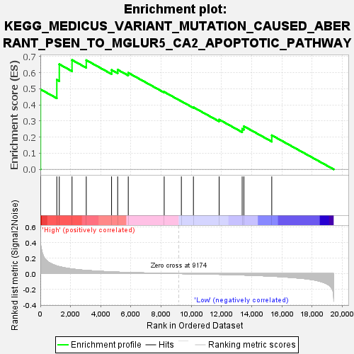
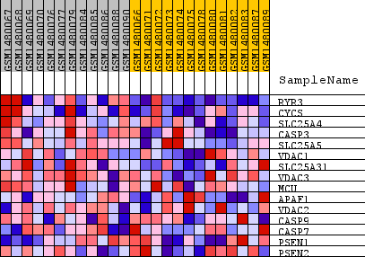
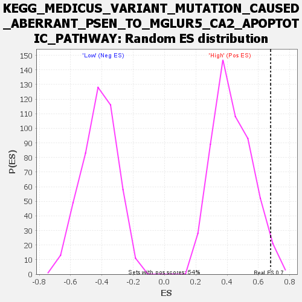

| Dataset | WG6v3.MRPL3.cls#High_versus_Low.MRPL3.cls#High_versus_Low_repos |
| Phenotype | MRPL3.cls#High_versus_Low_repos |
| Upregulated in class | High |
| GeneSet | KEGG_MEDICUS_VARIANT_MUTATION_CAUSED_ABERRANT_PSEN_TO_MGLUR5_CA2_APOPTOTIC_PATHWAY |
| Enrichment Score (ES) | 0.67794263 |
| Normalized Enrichment Score (NES) | 1.562876 |
| Nominal p-value | 0.027726432 |
| FDR q-value | 0.4856308 |
| FWER p-Value | 0.958 |

| SYMBOL | TITLE | RANK IN GENE LIST | RANK METRIC SCORE | RUNNING ES | CORE ENRICHMENT | |
|---|---|---|---|---|---|---|
| 1 | RYR3 | RYR3 | 10 | 0.423 | 0.4961 | Yes |
| 2 | CYCS | CYCS | 1090 | 0.098 | 0.5555 | Yes |
| 3 | SLC25A4 | SLC25A4 | 1254 | 0.089 | 0.6517 | Yes |
| 4 | CASP3 | CASP3 | 2098 | 0.059 | 0.6779 | Yes |
| 5 | SLC25A5 | SLC25A5 | 3040 | 0.040 | 0.6768 | No |
| 6 | VDAC1 | VDAC1 | 4715 | 0.022 | 0.6164 | No |
| 7 | SLC25A31 | SLC25A31 | 5120 | 0.019 | 0.6177 | No |
| 8 | VDAC3 | VDAC3 | 5821 | 0.014 | 0.5984 | No |
| 9 | MCU | MCU | 8200 | 0.003 | 0.4800 | No |
| 10 | APAF1 | APAF1 | 9337 | -0.000 | 0.4220 | No |
| 11 | VDAC2 | VDAC2 | 10136 | -0.003 | 0.3848 | No |
| 12 | CASP9 | CASP9 | 11839 | -0.010 | 0.3086 | No |
| 13 | CASP7 | CASP7 | 13364 | -0.018 | 0.2510 | No |
| 14 | PSEN1 | PSEN1 | 13477 | -0.019 | 0.2670 | No |
| 15 | PSEN2 | PSEN2 | 15323 | -0.033 | 0.2112 | No |

